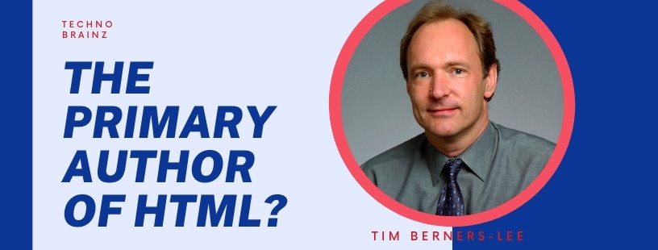

Tim Berners Lee

|
|
|

Sir Timothy John Berners-Lee, born 8 June 1955),also known as TimBL, is an English computer scientist best known as the inventor of the World Wide Web. He is a Professorial Fellow of Computer Science at the University of Oxford[2] and a professor at the Massachusetts Institute of Technology (MIT). Berners-Lee proposed an information management system on 12 March 1989, then implemented the first successful communication between a Hypertext Transfer Protocol (HTTP) client and server via the Internet in mid-November The first version of HTML was written by Tim Berners-Lee in 1993. Since then, there have been many different versions of HTML. The most widely used version throughout the 2000's was HTML 4.01, which became an official standard in December 1999.Tim Berners-Lee, in full Sir Tim Berners-Lee, (born June 8, 1955, London, England), British computer scientist, generally credited as the inventor of the World Wide Web. In 2004 he was awarded a knighthood by Queen Elizabeth II of the United Kingdom and the inaugural Millennium Technology Prize (€1 million) by the Finnish Technology Award Foundation. Computing came naturally to Berners-Lee, as both of his parents worked on the Ferranti Mark I, the first commercial computer. (See computer: The first stored-program machines.) After graduating in 1976 from the University of Oxford, Berners-Lee designed computer software for two years at Plessey Telecommunications Ltd., located in Poole, Dorset, England. Following this, he had several positions in the computer industry, including a stint from June to December 1980 as a software engineering consultant at CERN, the European particle physics laboratory in Geneva. |
About Me

Tim Berners-Lee is a software engineer who invented the Internet (or the World Wide Web) in 1989 while at CERN, the European Particle Physics Laboratory.
He is director of the World Wide Web Consortium that he founded and a Professor in the Computer Science Department at the University of Oxford.
Timothy John Berners-Lee was born in London on June 8, 1955. His parents were Mary Lee Woods and Conway Berners-Lee; he had three siblings. The Berners-Lee couple worked with the very first ever commercial computer, the Ferranti Mark 1 so you could say that computers were his legacy.
After graduating Berners-Lee found employment as an engineer for Plessey Telecom located in Poole, Dorset and he worked on distributed transaction systems, message relays, and bar code technology. In 1978 he moved to D.G. Nash in Ferndown, Dorset which was run by two of his friends Dennis Nash and John Poole, where he created type-setting software for printers and wrote and a multitasking operating system.
- Who wrote the first Internet program?
- What did Timothy Berners-Lee discover?
- Who is known as the father of WWW?
Contact
Address: 32 Vassar Street MIT Room 32-G524 Cambridge MA 02139 USA Phone: +1 (617) 253 5702 Fax: +1 (617) 258 5999 Email: timbl@w3.org Facebook: https://www.facebook.com/tim.berners.lee Twitter: https://twitter.com/timberners_lee Website: http://www.w3.org/People/Berners-Lee/